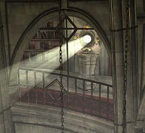
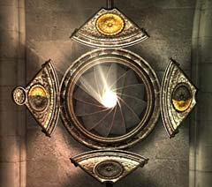
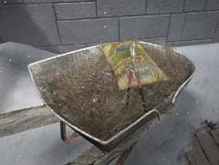

|

ロウソクの謎を解いたあなたは、建物の一番上にあるなぞのオブジェのシャッターが開くのを確認するだろう。 光が漏れる穴・・・、それを見た瞬間もらったレンズをはめてみようと考えるのならば、非常に勘がいい。

しかし、物事はそう簡単に終わることはない。レンズをはめた後は、このようにシャッターを絞らなければならない。なぜならば、あなたは「マンモスの目」のヒントを見つけなければならないからだ。 レンズを絞るには、周囲に着いた4枚の板を正しい順番で押せばよい。組み合わせはあまり多くないので、根気よく試そう。 レンズを絞ることで、この隠し部屋にあなたは導かれる。ここにある本と「ユコール族の工芸品」を回収しよう。そして、本をしっかりと読み、次なる課題を見つけよう。

一輪車に「枝きりバサミ」が置いてある。ロウソクの作り方を知った後に回収しておこう。このはさみで何を切るのか、だいたい想像が付くだろう。 この墓に絡まった植物を切るのだ。なぜ切るのか? などという野暮な質問は無しである。本を読んで欲しい。 |